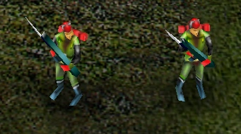
Red Guard
Infanteria basica china. Si estan en un grupo de 5 o mas, mejora su daño y velocidad a la hora de disparar
Esta Faccion se especializa en superioridad numerica ya que posse una gran cantidad de vehiculos e infanteria,con la intencion de abrumar a su oponente,utilizando tambien tecnologia nuclear para mejorar algunos de sus tanques

Infanteria basica china. Si estan en un grupo de 5 o mas, mejora su daño y velocidad a la hora de disparar
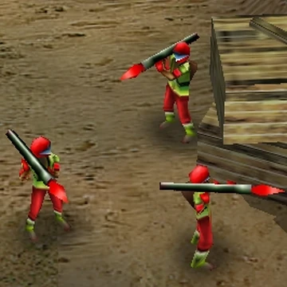
Infantería especializada en Anti-Tanques, puede colocar un explosivo TNT en vehiculos o edificios enemigos. Si estan en un grupo de 5 o mas, mejora su daño y velocidad a la hora de disparar
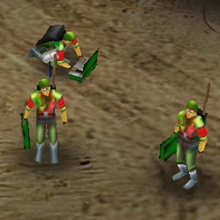
Esta unidad puede conseguir dinero infinito,inicialmente consigue $5 pero si sube de rango puede conseguir $8 o $10, Por segundo
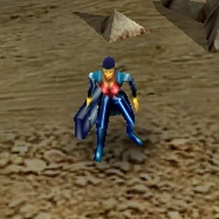
Especialista en infiltración y captura.Es una unidad invisible para el enemigo que puede robar dinero del centro de suministros enemigo, inabilitar un vehiculo enemigo por un cierto tiempo y capturar edificios neutrales o enemigos mas rapido que la Guardia roja
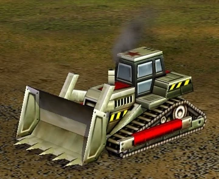
Construye los edificios chinos. Puede eliminar minas, Bombas o Trampas de demolicion que haya en el campo
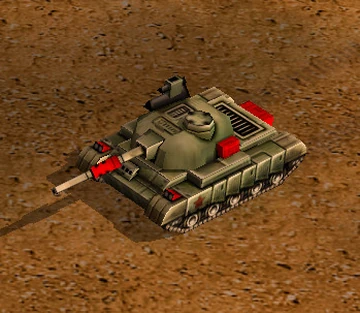
Tanque principal chino. Si estan en un grupo de 5 o mas, mejora su daño y velocidad a la hora de disparar
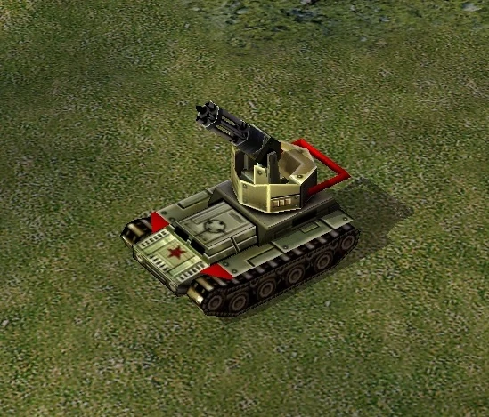
Vehículo especializado Anti-Infanteria y Defensa Aerea
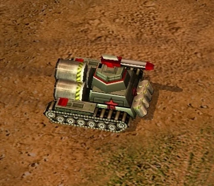
Vehículo especializado Anti-Infanteria. Si hay un edificio civil guarnizado por soldados enemigos, El Tanque Dragon los elimina al instante dejando el edificio libre y con el menor daño posible. Puede crear un muro de fuego
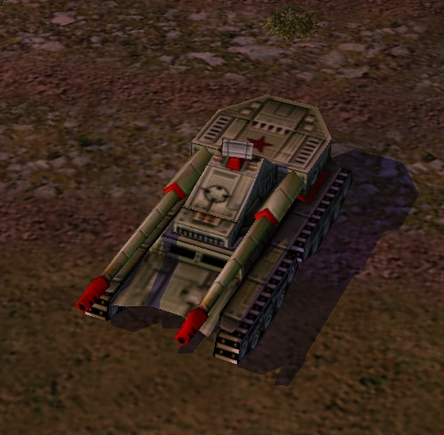
Tanque pesado. A pesar de su movilidad lenta, Es un vehiculo muy resistente con un gran daño, Posee 3 mejoras, las cuales solo se puede elegir 1 sola Puede mejorar para que tenga un bunker encima de el, capaz de llevar a 5 soldados proporcionando una mejor defensa para el overlord Tambien puede mejorarse para que tenga un cañon Gatting que pueda disparar a la infanteria o los aviones enemigos, ademas de que puede revelar unidades invisbles que esten cerca de el Y por ultimo puede tener una torre de altavoz, que puede reparar o curar tanto al overlord como a sus unidades cercanas
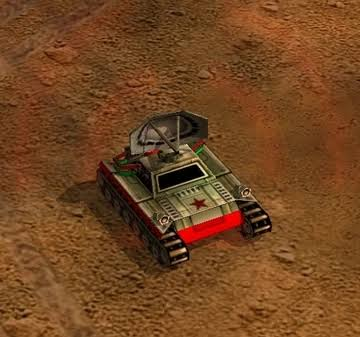
Vehículo de apoyo electrónico. Puede disperar los misiles o cohetes que se aproximen a el, impidiendo casi siempre que le impacten a el o a las unidades cercanas Tambien puede inabilitar un vehiculo enemigo pero pierde su habilidad de dispersar los misiles,dejandolo vulnerable si esta solo
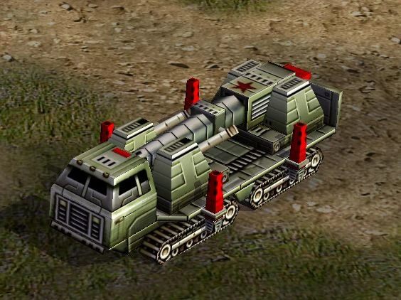
La mejor Artillería de largo alcance, con un fuerte daño en area, que una vez impactado sus proyectiles dejan una pequeña radiacion temporal en el area
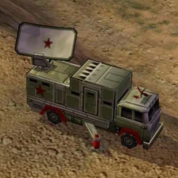
Vehículo de reconocimiento, puede revelar unidades invisibles que esten cerca de el, si esta quieto es invisble para el enemigo, lleva a 2 cazadores tanque para defenderse
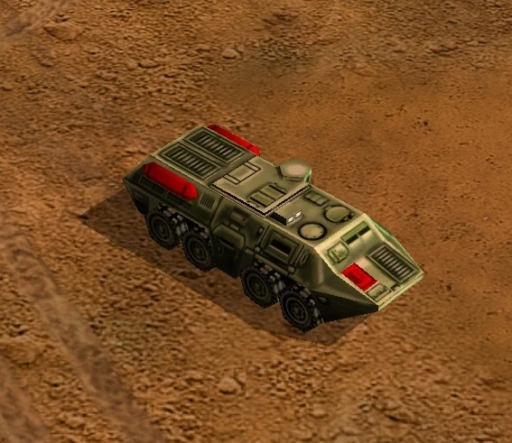
Vehículo de reconocimiento, Puede revelar unidades invisibles que esten cerca de el, lleva 8 soldados de la guardia roja y puede curar a la infanteria cuando entran
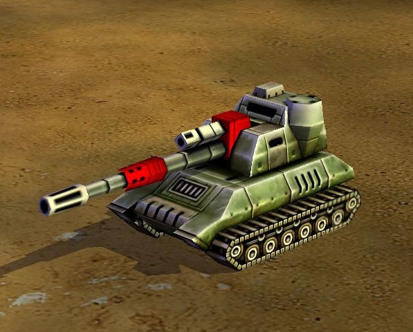
Artillería especializada de largo alcance. Dispara pequeñas rafagas de fuego si hay mas de una 1 disparando, pueden crear una "Tormenta de Fuego" en el area
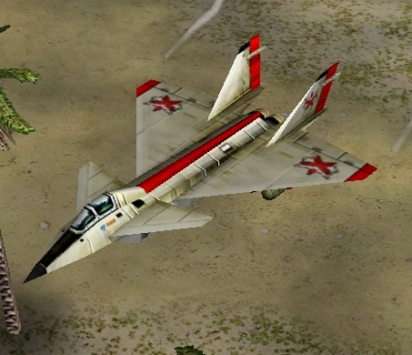
Aeronave de combate. Si un grupo de 4 dispara a mismo tiempo en un area, crean una "Tormenta de Fuego" que dura 5 segundos Cada avion tiene 2 misiles
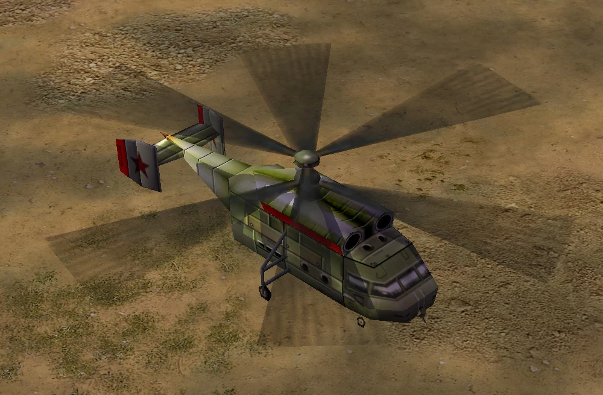
Helicóptero de transporte y combate. Tiene las mismas mejoras que el overlord Puede transportar 1 solo vehiculo sino tiene ninguna mejora

Centro principal. Aqui es donde se construyen las excavadoras para construir los edificios chinos Puede mejorarse para que tenga un radar, para el minimapa
Proporciona energia a la faccion china. Sin ella la Produccion se vuelve lenta, Puede sobrecagarse para que produzca un 50% de energia, Pero el Reactor se daña con el tiempo, el cual si se destruye causa un pequeño daño a los edificios o unidades cercanas, dejando en el area, una radiacion temporal
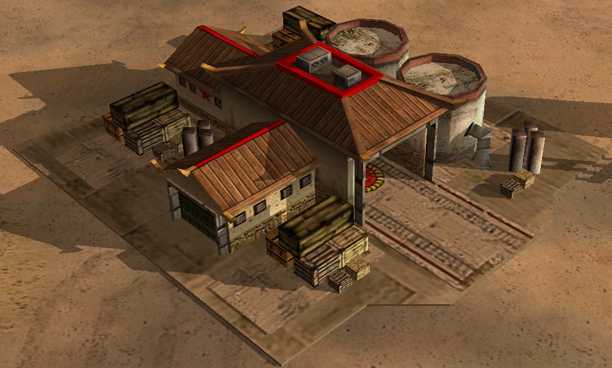
Centro de recursos. Aqui se construyen los camiones que traen los recursos que hay en el campo para abastecer la base, pudiendo llevar $300

Producción de infantería. Aqui se consigue la mejora para que la guardia roja puede capturar edificios enemigos o neutrales

Producción de vehículos. Aqui se consigue 2 mejoras,1 para el gatling tank y el gatling cannon,mejorando su daño en un 25% y 1 mejora para el dragon tank, para que pueda disparar una rafaga de fuego mas daniño, tomando un color morado
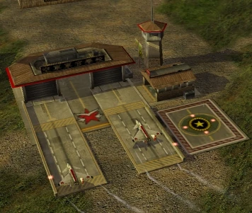
Producción de aeronaves. Aqui se consigue una mejora para los Migs, mejorando su resistencia
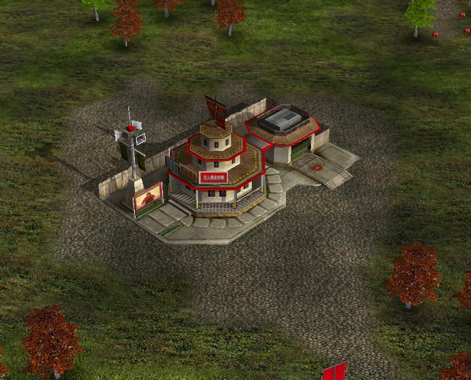
Centro tecnológico. Aqui se consigue 2 mejoras, la primera es el "patriotismo" para la infanteria,provando que disparen mas rapido y causen mas daño que cuando estaban en grupo inicialmente La segunda, proporcionando a todas las torres de altavoz una mejor eficiencia de curacion

Centro tecnológico. Aqui pueden resguardarse hasta 8 hackers para que puedan conseguir el dinero sin ser atacados por el enemigo, a menos que el edificio caiga Tambien puede mejorarse para que se revele en el mapa la ubicacion los centros de comando enemigos, con una segunda mejora del mismo que puede mostrar todo el mapa cada cierto tiempo
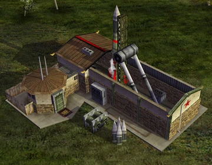
Superarma china. Con un conteo 6 minutos, lanza un misil nuclear que causa un daño grave, pudiendo destruir los edificis que esten cerca de la explosion dejando radiacion durante un tiempo, aqui se consigue la mejora para los tanques para que sean mas rapidos y sus proyectiles dejen radiacion cuando impacten pero sin son destruidos, la explosion de ellos causa un pequeño daño a las unidades cercanas, dejando un poco de radiacion temporal Tambien tiene una mejora para los cañones nucleares, para que puedan disparar "proyectiles de neutrones", las cuales al impactar matan a la infanteria dentro de los vehiculos, para poder tomarlos y usarlos en su contra, pero tambien puede aniquilar a tus propios soldados o de tus aliados si estan cerca del impacto, dandote asi para elegir si prefieres los proyectiles de neutrones o las nucleares
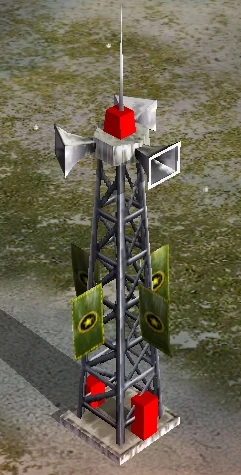
Cura a las unidades que esten cerca de el
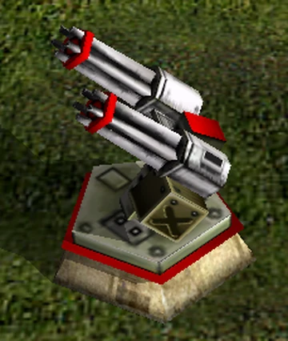
Defensa de la base. Dispara una rafaga de balas a gran velocidad, sirve para derribar la infanteria y la aviacion puede revelar unidades invisibles
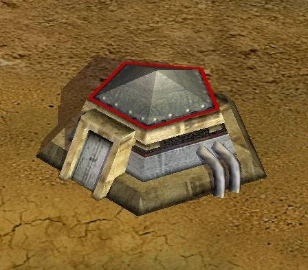
Defensa de la base. Puede guarnizar a 5 soldados para defender la base
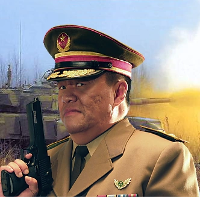
Especializado en vehículos blindados.
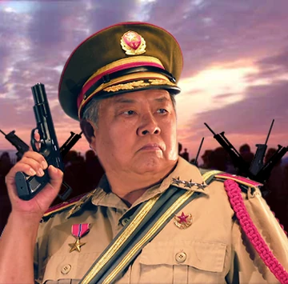
Especializado en infantería.
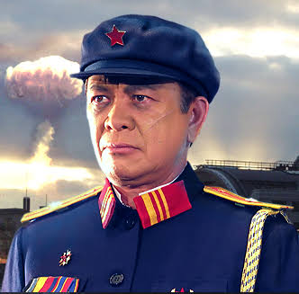
Especializado en tecnología nuclear.